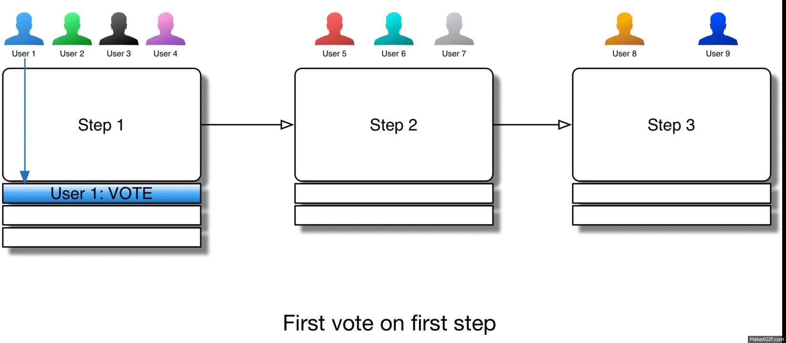

Современная разработка ПО не обходится без автоматических тестов. Сюда входят базовые Unit и Integration тесты, сложные Performance и Penetration тесты, а также множество других способов проверить программу ещё до отправки тестировщкам. Менеджеры давно перестали спорить о пользе автоматических тестов. Команды, практикующие автоматизацию тестирования, следующие методологиям TDD и BDD, быстрее поставляют работающие системы с меньшим количеством ошибок. Что делает их, в конечном счете, конкурентоспособными на перегретом рынке коммерческой разработки программных систем.
Существуют такие предметные области, где главное – это качество и стабильность работы всей системы или отдельных ее частей. В таких случаях разработчики могут и должны применять более мощные и строгие инструменты и методы автоматических проверок кода. Отличными примерами таких методов верификации программ являются два ортогональных друг-другу подхода: мутационное тестирование (mutation testing) и инвариантное тестирование (property-based testing).
Суть метода мутационного тестирования заключается в намеренном изменении кода программы всеми возможными способами и последующей верификации того, что запуск тестов на модифицированном коде привел к ошибке. Если изменение кода программы не привело к «падению» какого-либо unit или integration теста, то можно сделать вывод либо о том, что изменяемый участок кода вообще не используется, либо тесты не содержат примера, приводящего к задействованию этого участка кода. В обоих случаях нужно обратить внимание на всесторонность тестов либо качество кода.
Инвариантное тестирование действует иначе – код остается неизменным, меняются данные. Суть в генерации псевдослучайных данных, поступающих на вход программы и последующей проверке набора свойств (инвариантов) на результате. Пример самого простого инварианта – отсутствие исключительных ситуаций в процессе работы программы. То есть, программа отрабатывает без аварийного завершения, вне зависимости от того, что было подано на вход.
Получается, что изменениям подвергаются либо данные, поступающие на вход программы, либо сама структура программы. Оба способа являются достаточно сложными в применении, но очень мощными инструментами. Цель этой публикации – познакомиться с сущностью и особенностями property-based тестирования на примере создания Workflow-движка с использованием функционального языка программирования ELM.
Строгая типизация и вывод типов
ELM относится к статически типизированным, функциональным языкам программирования – аргументы и возвращаемое значение функции в ELM всегда описываются конкретными типами данных. Более того, в ELM все функции являются «чистыми», то есть не содержат «побочных эффектов». На практике это означает, что программы на ELM легче верифицировать: вызов произвольной функции с одним и тем же набором аргументов всегда вернёт один и тот же результат, не внося изменений в общее состояние системы.
В той или иной степени, эти преимущества свойственны многим функциональным языкам. Но ничего не бывает бесплатно: от разработчиков требуется дисциплина и умение мыслить в «функциональном» стиле. Больше не выйдет вернуть из функции null там, где это удобно, не пройдут и трюки с явным приведением типов. Придётся уделять больше внимания моделированию состояний и процессов из предметной области, а также заботиться о том, чтобы недопустимые состояния модели нельзя было выразить в коде.
Постановка задачи
Хватит пустых слов, покажите мне код! Окей, окей. Мы рассмотрим пример довольно простого, но в то же время нетривиального, движка Workflow-ов из моей предыдущей статьи Keep calm and kill mutants:
- Each step has a threshold value.
- To proceed to the next step, it is necessary to get threshold number of votes.
- Power users can force skip one step.
- Users with at least vote permission can reject current step (previous step restarts).
- Inactive users cannot vote or reject.
- User can only vote once on the same step.

Чтобы исходный код было проще понять, я решил не изобретать велосипед и попытался перевести код на ruby в ELM один-в-один. Конечно, результат значительно отличается от оригинала – синтаксис и подход совершенно иные. Но хочется верить, что это даст возможность апеллировать к более привычному императивному ruby при возникновении сложностей.
Типы данных
Итак, начнем с определения самого главного типа – Workflow. Это структура (record), состоящая из набора полей
type alias Workflow =
{ stepsConfig : Array Int -- массив целых чисел, содержащий количество
-- необходимых голосов на каждом шаге
, currentStep : Int -- текущий номер шага, на котором находится данный workflow
, votes : Array Bucket -- массив множеств пользователей, иными словами список пользователей,
-- проголосовавших на каждом из шагов
}Похожим образом определим и «пользователя» (User). Обратите внимание, что User это полноценный тип, в отличие от Workflow, который по сути является именованной структурой данных. Первое упоминание User – это название типа, а второе – это имя конструктора типа. В большинстве случаев программисты осознанно делают их одинаковыми для удобства.
type User
= User
{ name : String -- строковое имя пользователя, используется
-- для идентификации (пример все-таки учебный)
, active : Bool -- флаг активности пользователя (помним,
-- что неактивные пользователи не могут принимать
-- участия в голосовании)
, permissions : Array Permission -- список (массив) прав пользователя, тип Permission
-- определен как type Permission = VOTE | FORCE | NONE
}Реализация
Далее рассмотрим один из возможных путей исполнения программы – получение одобрения от пользователя с расширенными правами на каком-либо шаге процесса. Работа начинается с вызова функции approve (для сравнения – ссылка на соответствующую ruby реализацию). Функция принимает два аргумента: User и Workflow и всегда возвращает Workflow. Если пользователь не активен not (User.active user), то результат работы – неизмененный workflow. Иначе происходит сопоставление с образцом (pattern matching) по результату вычисления выражения User.permission workflow.currentStep user – вызов функции permission из пакета User с аргументами workflow.currentStep и user. Выглядит странно, но помогает IDE, услужливо подсказывающее сигнатуру функции permission: permission : Int -> User -> Permission. Тип Permission является алгебраической суммой, и компилятор требует от нас явно определить что делать в каждом случае.
approve : User -> Workflow -> Workflow
approve user workflow =
if not (User.active user) then
workflow
else
case User.permission workflow.currentStep user of
FORCE ->
increment user workflow
VOTE ->
vote user workflow
NONE ->
workflowТак как голосующий пользователь имеет расширенный набор прав, ход исполнения программы продолжится вызовом функции increment. Сигнатура у этой функции такая же, как и у approve – пользователь на первом месте, а workflow на втором. Выбор такого порядка следования аргументов не случаен. Дело в том, что в ELM, как и в других функциональных языках, широкое применение нашли pipeline операторы: |> и <|. С их помощью удобно выстраивать цепочки вызовов, когда возвращаемое значение одной функции передается в следующую. Итак, increment, используя вспомогательную функцию step, конструирует новый экземпляр newWorkflow, где номер шага увеличен на единицу. newWorkflow, в свою очередь, тоже копия workflow-а из аргументов функции, но с измененным полем votes.
В императивном языке мы бы могли просто обновить один из элементов этого массива. Однако в функциональных языках данные, как правило, неизменяемые (immutable) – поэтому нельзя просто так взять и добавить голос в множество голосов шага. Нужно сконструировать новое множество на основании существующего, в котором добавлен новый элемент. Этим занимается конструкция DictSet.insert user bucket, которая и создает новое множество на основе существующего bucket, добавляя в него user. Примечательно, что создание нового экземпляра множества никак не приводит к изменению старого, массив bucket-ов тоже ничего не знает о созданной копии одного bucket-а. Так что приходится модифицировать и массив тоже. Делается это с помощью функции update из пакета Array.Extra с сигнатурой update : Int -> (a -> a) -> Array a -> Array a. Индекс элемента, который подвергается изменению, передается первым параметром, сам массив передается последним, а между ними – функция изменения элемента. То есть такая функция, куда на вход поступит bucket, а то, что получится на выходе и будет вставлено в массив на его место. Возвращаемое значение, понятное дело, должно быть того же типа.
Конструкция let - in может быть слегка непривычна для понимания, но если посмотреть на нее как на: допустим newWorkflow определен как { workflow | votes = ... - тогда весь increment можно выразить в терминах newWorkflow как step Forward newWorkflow То есть по сути это всего лишь синтаксический сахар, явное именование части выражения.
increment : User -> Workflow -> Workflow
increment user workflow =
let
newWorkflow =
{ workflow | votes =
update workflow.currentStep (\bucket -> insert user bucket) workflow.votes }
in
step Forward newWorkflow
type Direction
= Forward
| Backward
step : Direction -> Workflow -> Workflow
step direction workflow =
let
count =
case direction of
Forward ->
1
Backward ->
-1
in
{ workflow | currentStep = workflow.currentStep + count }Ух, прямо голова кругом пошла от всего этого… Но зато немного разобрались в синтаксисе ELM и сути работы workfow-а. Вникнуть в тестирование будет гораздо легче.
Традиционное тестирование
Структура теста повторяет сценарий на картинке в начале статьи: создается workflow, состоящий из трех шагов с порогами 3, 2 и 2 соответственно: Workflow.init [ 3, 2, 2 ]. Далее, оператор |> берет результат выражения слева, то есть проинициализированный workflow и подставляет его последним аргументом в выражение справа. То есть получается: approve (create "User 1" True [ VOTE ]) (Workflow.init [ 3, 2, 2 ]), а это и есть вызов функции approve с двумя аргументами: пользователем и workflow-ом! Без использования pipe оператора |> пришлось бы писать огромное выражение с просто неприличным количеством круглых скобок (привет, lisp). Логика самих проверок видна из их описательной части (строка после test). До финального голосования пользователем “User 9”, workflow не должен быть завершенным, становится он таким только после финального голосования.
traditionalTest : Test
traditionalTest =
let
workflow =
[ 3, 2, 2 ]
|> Workflow.init
|> approve (create "User 1" True [ VOTE ])
|> approve (create "User 1" True [ VOTE ])
|> approve (create "User 2" True [ VOTE ])
|> approve (create "User 3" False [ VOTE ])
|> approve (create "User 4" True [ VOTE ])
|> approve (create "User 5" True [ NONE, FORCE ])
|> reject (create "User 6" True [ NONE, NONE, VOTE ])
|> approve (create "User 7" True [ NONE, VOTE ])
|> approve (create "User 8" True [ NONE, VOTE ])
finalUser =
create "User 9" True [ NONE, VOTE, FORCE ]
in
describe "Real world workflow example"
[ test "Initially, workflow is not finished" <|
equal False (finished workflow)
, test "But after approve it becomes finished" <|
equal True (finished (approve finalUser workflow))
]Ну, пока что мы не увидели ничего нового – тест подчиняется стандартной структуре: arrange, act, assert. Посмотрим, что сможет предложить property-based тестирование.
Property-based тестирование
Для начала, нам нужно сформулировать несколько инвариантов относительно какого-нибудь workflow-а. Возьмем за основу первое что приходит в голову: номер шага на котором он находится (свойство currentStep) не должен быть больше количества шагов, какие бы действия пользователи ни совершали с ним. Для этого можно использовать длину массива из свойства stepsConfig. После, для симметрии, добавим еще требование о неотрицательности номера шага. Такой инвариант в коде можно записать так: step >= 0 && step <= (length initWorkflow.stepsConfig). Условие <= на правой границе приемлемо, так как переходя в завершенное состояние workflow формально будет находиться на следующем за последним шагом. Осталось определить, что такое step и выразить в коде концепцию «что бы пользователи ни делали».
Для целей проверки workflow-а на «вшивость» по верхней границе можно чуть ослабить утверждение «что бы пользователи ни делали» до «сколько бы разные пользователи ни approve-али» – ведь reject неизбежно приводит к уменьшению номера шага, а approve только к увеличению. То есть если где-то взять список голосующих пользователей, то step можно выразить как (foldl approve initWorkflow users).currentStep. Согласен, выглядит подозрительно коротко. Кто-то уже представил в голове цикл, пробегающийся по пользователям и вызывающий на каждом шаге функцию голосования. Однако функциональная природа языка и аккуратный подход к дизайну методов все упрощают. foldl – это широко применяемая функция высшего порядка, которая производит операцию свертки. Ее три параметра это – функция преобразования approve, начальное значение initWorkflow и список, который требуется «свернуть» – users. Переводя на человеческий язык: начиная с initialWorkflow, последовательно вызвать функцию approve с аргументами из списка users, чтобы получился итоговый workflow. Еще раз стоит себя похвалить за правильный выбор порядка аргументов функции approve, пользователь передается первым параметром, как того требует контракт «свертки».
Теперь у нас есть всё для формулирования первого property-based теста. Обратите внимание как натурально читается DSL: утверждаю (claim) что гипотеза верна (true) для (for) набора случайных пользователей. Синтаксис \(параметры) -> выражение (или \параметр -> выражение в случае одного аргумента) не что иное, как объявление анонимной функции.
claim "Workflow should remain in its bounds"
|> true
(\users ->
member (foldl approve initWorkflow users).currentStep <|
range 0 (length initWorkflow.stepsConfig)
)
|> for (list userProducer)Перед тем как углубиться в суть выражения list userProducer, стоит все же посмотреть на результаты запуска. Видно, что довольно быстро нашелся контрпример, опровергающий наш инвариант. Очень хотелось верить в код, написанный нами с такой аккуратностью и протестированный в предыдущей инкарнации mutation тестами, но он оказался не так уж и хорош. Глядя на контрпример, становится очевидно в чем проблема: если пользователь имеет FORCE привилегии, то код не делает никаких проверок и просто-напросто увеличивает номер шага!
✗ Workflow should remain in its bounds
On check 3, found counterexample:
[User { name = "", active = True, permissions = Array.fromList [VOTE] },
User { name = "", active = True, permissions = Array.fromList [NONE,FORCE] },
User { name = "", active = True, permissions = Array.fromList [NONE,NONE,FORCE] },
User { name = "", active = True, permissions = Array.fromList [NONE,NONE,NONE,FORCE] }]
Expected: True
But It Was: FalseГенерация случайных данных
Выражение list userProducer имеет тип Producer (List User), что можно прочитать как «Генератор Списка Пользователей». Он получается применением комбинатора list (имеющего сигнатуру типа list : Producer a -> Producer (List a)) к генератору userProducer (с типом Producer User). На основе одного генератора легко построить другой, более сложный. Так, между прочим, и был построен userProducer:
userProducer : Producer User
userProducer =
convert (uncurry3 create)
toTuple
(tuple3 ( string, bool, list permissionProducer ))Жонглирование кортежами (tuple) – всего лишь вынужденная машинерия. Главное тут то, что мы «объясняем» как сконструировать пользователя при помощи функции create, используя два примитивных генератора: string и bool а так же результат другой комбинации – list permissionProducer. Еще одной важной особенностью является так же «объяснение» как, зная пользователя, извлечь кортеж его трех составляющих. Для этого служит функция toTuple, которая получив пользователя на вход, возвращает кортеж из трех элементов.
toTuple : User -> ( String, Bool, List Permission )
toTuple user =
( (name user), (active user), (permissions user) )Именно «знание» о том, как «разобрать» пользователя на примитивы и помогло найти ошибки в коде так быстро. Имена и количество пользователей, набор привилегий каждого из них и все остальные аспекты контрпримера выглядят «минимальными»: пустое имя пользователя, отсутствие других пользователей в списке кроме действительно необходимых и т.п. Код библиотеки тестирования упрощал каждый аспект начального контрпримера до тех пор, пока это было возможным, разбивая каждый из Producer-ов на составные части, упрощая их и собирая обратно.
Исправление кода
Перепишем функцию approve так, чтобы избавиться от ошибки. Теперь проверке подвергается не только флаг неактивности пользователя, но и завершенность workflow-а, а так же факт того, голосовал ли пользователь на текущем шаге.
approve : User -> Workflow -> Workflow
approve user workflow =
if locked user workflow then
workflow
else
case User.permission workflow.currentStep user of
FORCE ->
increment user workflow
VOTE ->
vote user workflow
NONE ->
workflow
locked : User -> Workflow -> Bool
locked user workflow =
let
currentBucket = currentStepVotes workflow
in
any identity
[ finished workflow
, User.inactive user
, member user currentBucket
]С таким исправлением реализации запуск тестов завершается успешно, никаких ошибок больше нет. Постараемся сформулировать еще инварианты для проверки. Последний пункт требований к workflow гласит, что пользователь должен иметь возможность голосовать только один раз на каждом из шагов – выразим это в коде. В этот раз используем другую синтаксическую конструкцию: «claim описание that выражение is эквивалент for генератор». То есть для каждой пары пользователь-операция код пытается применить эту операцию к workflow-у, на текущем шаге которого пользователь с таким же именем уже голосовал. Инвариант заключается в том, что шаг workflow-а измениться при этом не должен.
workflowVotedByUser : User -> Workflow
workflowVotedByUser user =
let
userWithSameName =
create (name user) True [ VOTE, VOTE ]
in
initWorkflow |> twice (approve userWithSameName)
claim "Same user cannot vote twice"
|> that (\( user, operation ) -> (workflowVotedByUser user |> apply operation user).currentStep)
|> is (\( user, operation ) -> (workflowVotedByUser user).currentStep)
|> for (tuple ( userProducer, operationProducer ))Запуск тестов показывает, что инвариант нарушен: найдена такая пара пользователь-операция, при применении которой шаг workflow-а уменьшается на единицу.
✗ Same user cannot vote twice
On check 1, found counterexample:
(User { name = "", active = False, permissions = Array.fromList [NONE,VOTE] },Reject)
Expected: 1
But It Was: 0И действительно, в функцию reject так же закралась ошибка. Применение locked вместо not User.active исправляет ситуацию – все тесты теперь зеленые.
Running 4 tests. To reproduce these results, run: elm-test --seed 2042167370
TEST RUN PASSED
Duration: 5 ms
Passed: 4
Failed: 0Заключение
При помощи всего двух простых инвариантов удалось обнаружить несколько нетривиальных проблем в реализации workflow-а. Найти их традиционными способами трудно – разработчик, может, и проверит, получится ли голосовать второй раз на одном и том же шаге, однако вряд ли он попытается сделать reject сразу после голосования в коде unit тестов. К слову, в ruby реализации, вдоль и поперек проверенной мутационным тестированием, обнаружились эти же дефекты ;) Что в очередной раз доказывает, что «серебряной пули» не существует и полагаться только на один способ проверки – наивно.
Библиотеки для property-based тестирования существуют не только для полностью функциональных языков программирования: в ruby это rantly, в python – hypothesis, в Java – junit-quickcheck и т.д.
Главным препятствием к использованию property-based тестов я вижу отнюдь не сложность формулирования инвариантов (хотя это действительно непросто) и даже не отсутствие развитого инструментария в некоторых языках программирования, а именно недостаточную осведомленность разработчиков. Надеюсь, примером с workflow-ом у меня вышло пробудить заинтересованность и обратить внимание на тему инвариантного тестирования.
Исходный код на языке ELM можно отыскать в публичном репозитории.